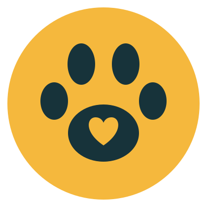

Resgate
Buscamos animais em situação de rua ou maus-tratos e levamos para atendimento veterinário.
Resgatamos, cuidamos e encontramos famílias para cães e gatos abandonados. Adote, doe ou seja voluntário.

Três frentes de trabalho para tirar os animais da rua e mantê-los longe dela.
Buscamos animais em situação de rua ou maus-tratos e levamos para atendimento veterinário.
Entrevista, visita e termo de adoção para que o animal chegue a uma família preparada.
Campanhas de castração e vacinação para reduzir o número de animais abandonados.
Somos uma ONG formada por voluntários que acreditam que adotar é a melhor forma de cuidar. Todo animal passa por avaliação veterinária, vacinação e castração antes de ser adotado.
Nosso objetivo é simples: cada cão ou gato resgatado encontra uma família que vai cuidar dele pelo resto da vida.
Mesmo sem adotar, você ajuda a manter os abrigos funcionando.
Cada valor vira ração, vacina e consulta.
chave-pix@casaquatropatas.org
Aceitamos ração, areia sanitária, cobertores e produtos de limpeza. Combine a entrega pelo formulário de contato.
Ajude com transporte, feiras de adoção, divulgação nas redes ou cuidados no abrigo.
Nada. A adoção é gratuita, e o animal é entregue vacinado e castrado.
Pode, desde que janelas e varandas tenham tela de proteção. Na entrevista, ajudamos a escolher um animal que combine com o seu espaço.
Preencha o formulário de contato escolhendo o assunto "Quero ser voluntário". Respondemos em até 3 dias úteis.
Fale com a gente. Preferimos receber o animal de volta a vê-lo abandonado.
Conte o que você procura e respondemos por e-mail.